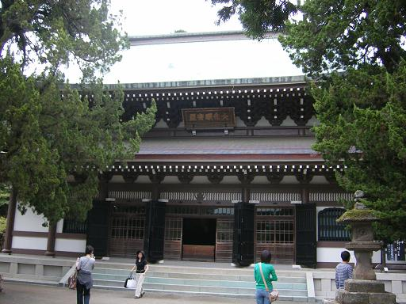
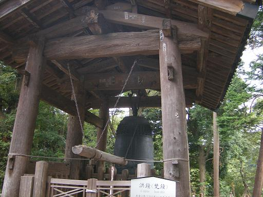
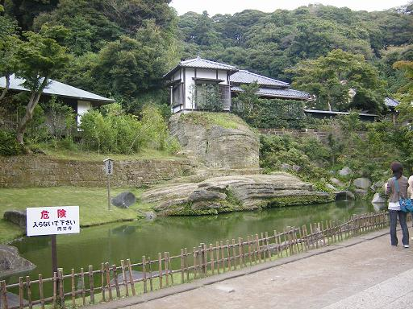
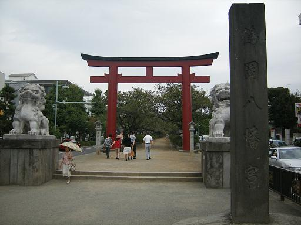
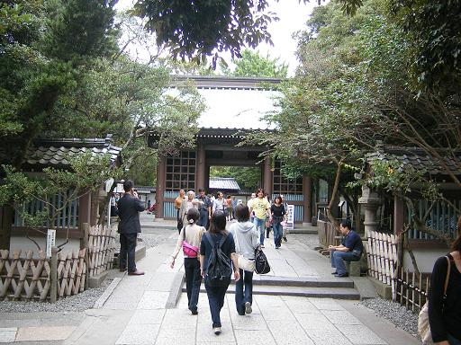
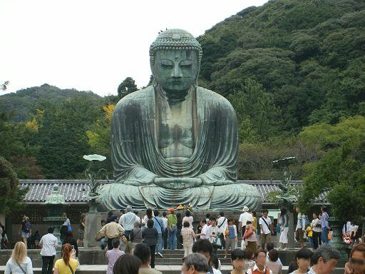
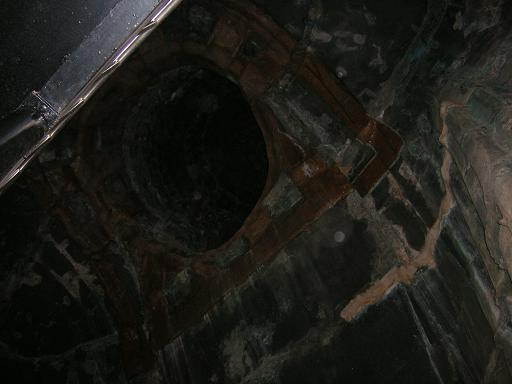

鎌倉
| 日付 | 2006年9月17日（日） |
|---|---|
| メンバー | 単独 |
| アクセス | 電車 |
鎌倉に行こうと思い立ち、行ってみた。
鎌倉市街から少し離れたところにある円覚寺。

円覚寺の鐘。

妙香池。ひっそりとしている。

鶴岡八幡宮へ行く。

鶴岡八幡宮本殿。こちらは円覚寺に比べ、にぎわっている。

続いて、高徳院へ行く。

高徳院にある、有名な鎌倉大仏。奈良の大仏より一周り小さい。

鎌倉大仏の中には入れるようになっている。
